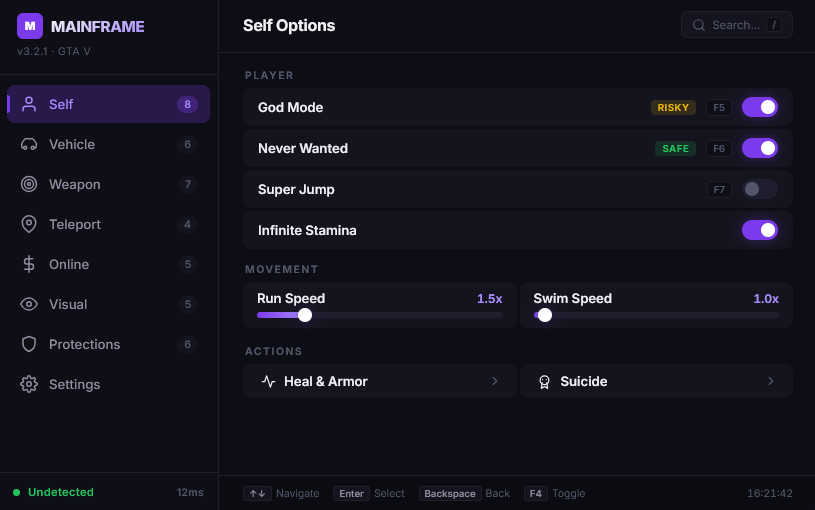

The Long Dark Mod Menu
Transform your survival experience in The Long Dark with unlimited resources and instant access to rare items in the harsh wilderness.
No sign-up. No surveys.

Essential Features
Explore powerful features designed for immersive gameplay.
Unlimited Resources
Access an endless supply of food, tools, and supplies to thrive.
Experience Boost
Gain experience instantly to unlock all survival skills fast.
Weapon Unlocks
Equip yourself with any weapon, from a knife to a rifle, in seconds.
Enhanced Speed
Move faster through the wilderness, making exploration effortless.
Item Spawn
Spawn items directly into your inventory, including rare finds.
No-Clip Mode
Explore every corner of the map without terrain barriers.
Unleash your potential in The Long Dark today!
Why MODGRID
Why Choose MODGRID?
Experience the Ultimate Freedom
Our mod menu is crafted for players seeking freedom and creativity in their survival journey.
- User-friendly interface
- Regular updates and support
- Seamless integration with the game
- No performance lag
- Safe and secure usage
- Community-driven improvements
Get Started in Minutes
Follow these simple steps to enhance your gameplay.
Grab the File
Download the MODGRID mod menu file from our site.
Boot The Long Dark
Launch The Long Dark on your preferred platform.
Run MODGRID.exe
Execute the MODGRID application to activate the mod menu.
Open the Menu
Press F2 to open the menu while in-game and access features.
Compatible Platforms
Our mod menu works seamlessly across various platforms.
Steam
Verified buildEpic Games
StableWindows 10
CompatibleWindows 11
CompatibleMicrosoft Store
OptimizedUnlock Your Adventure Now
Download The Long Dark mod menu for free and redefine your survival experience.
Download Free